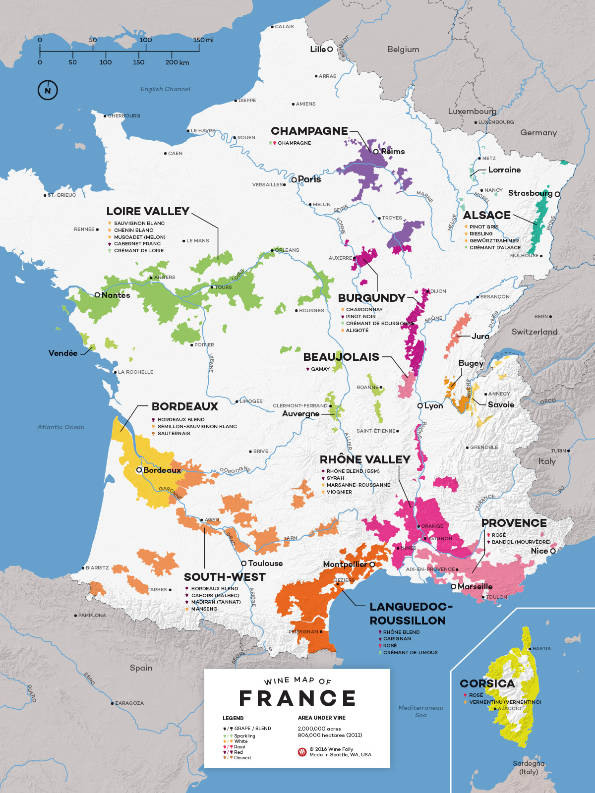
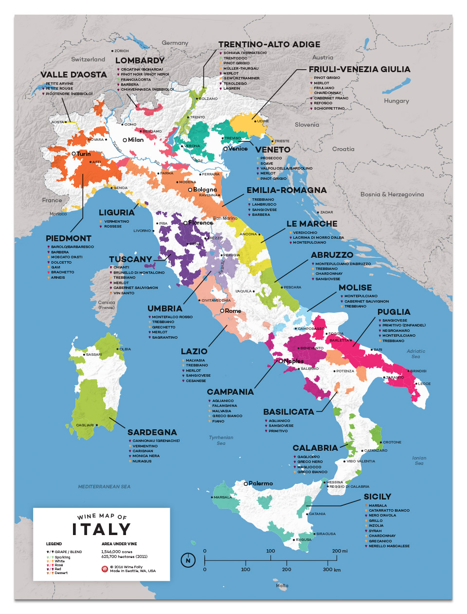
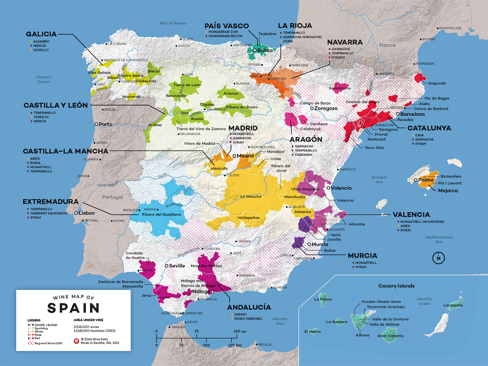

Wine is grown on every inhabited continent. Every region provides its own unique qualities. Explore below to learn about some of the more well-known regions throughout the world.
France:

The Bordeaux wine region consists of vineyards in the 60-mile radius surrounding the city of Bordeaux. This area's short Winters and high humidity make it a great region for growing some of the world's best Merlots and Cabernets.
People have been growing wine in the Rhône Valley for thousands of years. Summers are long and warm in this region. Some of the most popular grape varieties here are Grenache and Syrah.
As one of the Northern wine growing regions of France, the Loire Valley is a popular region for not only red grapes, but white as well. Here you will find vineyards growing grapes such as Cabernet Franc, Chenin Blanc, as well as Sauvignon Blanc.
Italy:

Even though Veneto is smaller than the Italy's other major wine-producing regions, it now produces more wine than any of them. Veneto is now popular for reds like Valpolicella, whites like Pinot Grigio, or even sparkling whites such as Prosecco.
Tuscany shares it's fame with regions such as Bordeaux or Champagne as one of the most famous wine regions in the world. Tuscany is best known for its dry Sangiovese-based wines such as Chianti or Brunello di Montalcino.
Located in the foothills of the Alps, the Piedmont region has a unique climate. Summers are warm and humid, however the winters are generally cold and dry. This region is the perfect growing location for not only dry red grapes such as the Nebbiolo, but sweet whites such as Moscato.
Spain:

Rioja is possibly the most well-known Spanish wine growing region. This region benefits from a mix of Atlantic, Continental, and Mediterranean climates, making it a unique wine-growing region. 90% of the grapes grown here are red, the most common of which is the Tempranillo.
Wine grapes have been growing in the Ribera del Duero region for thousands of years. However, modern viticulture was most likely brought to this region in the 12th century by French monks. Wines from this region are almost exclusively red. Tempranillo-based wines are most popular, often complimented by Cabernet, Merlot, or Malbec.
The Mediterranean Coast of Eastern Spain benefits from warm winds coming West from the sea. White wines are much more common here than in other parts of the country. This region produces more Cava (a sparkling white wine) than any other. Garnacha Blanca, Montstat, and Priorat are also commonly grown here.